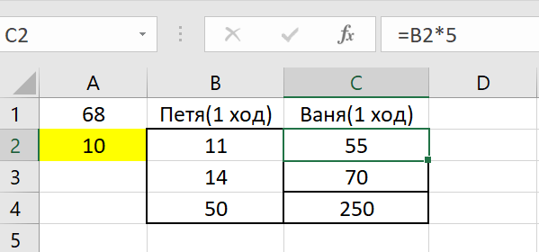

Задание №1
| Два игрока, Петя и Ваня, играют в следующую игру. Перед игроками лежат две кучи камней. Игроки ходят по очереди, первый ход делает Петя. За один ход игрок может добавить в одну из куч (по своему выбору) один камень или увеличить количество камней в куче в два раза. Игра завершается в тот момент, когда суммарное количество камней в кучах становится не менее 77. Победителем считается игрок, сделавший последний ход, т. е. первым получивший такую позицию, при которой в кучах будет 77 или больше камней. В начальный момент в первой куче было семь камней, во второй куче — S камней; 1 ≤ S ≤ 69. Известно, что Ваня выиграл своим первым ходом после неудачного первого хода Пети. Укажите минимальное значение S, когда такая ситуация возможна |
Решение:
- Открываем Excel и вносим необходимые нам данные в следующем виде: А1 - минимальное суммарное значение камней для победы, А2 - кол-во камней в первой куче, B2 - кол-во камней во второй куче(S)
- Далее нам нужно заполнить "каркас" таблицы следующим образом. Необходимо объединить ячейку "Петя(1 ход)".
- Теперь нужно заполнить все варианты развития событий, включая во внимание все возможные ходы:
- +1
- *2
Делать это нужно при помощи команд. Для наглядности лучше заменить S на любое число, например 10. В своем первом ходу Петя может увеличить первую кучу на 1, вторая же куча останется нетронутой. Заполнять ячейки лучше всего командами
Нам нужно добиться максимального количества камней в кучах, и поэтому для победы за 1 ход Ване нужно увеличить большую кучу в 2 раза, сделаем это командой
В итоге будет примерно так
- Далее необходимо заполнить остальные варианты ходов Пети и растянуть команду для хода Вани на эти варианты. Получится примерно так

- Теперь нам нужно выделить цветом те ячейки, в которых Ваня побеждает. Сделать это можно таким образом: Кликаем на ячейку E2(ход Вани), наживаем на "Условное форматирование"
Далее переходим в "Правила выделения ячеек" - "Другие правила"
Теперь надо выбрать "больше или равно" и вместо пустой ячейки значения кликнуть на ячейку А1 или просто написать число 77
Далее переходим в формат - заливка и выбираем любой цвет. Нужно растянуть эту команду на всю таблицу.
- Теперь нам нужно менять значения S до того момента, как мы не увидим залёный цвет. Если вы изначально видите зелёный цвет, то нужно менять значения в меньшую сторону, но чтобы зелёный цвет оставался, так как нам нужно найти именно минимальное значение. У меня самое минимальное значение с которого отображается зелёный цвет это 18
Записываем ответ
Ответ:18
Задание №2
| Два игрока, Петя и Ваня, играют в следующую игру. Перед игроками лежит куча камней. Игроки ходят по очереди, первый ход делает Петя. За один ход игрок может добавить в кучу один или четыре камня либо увеличить количество камней в куче в пять раз. Игра завершается в тот момент, когда количество камней в куче становится не менее 68. Победителем считается игрок, сделавший последний ход, т. е. первым получивший кучу, в которой будет 68 или больше камней. В начальный момент в куче было S камней; 1 ≤ S ≤ 67. Известно, что Ваня выиграл своим первым ходом после неудачного первого хода Пети. Укажите минимальное значение S, когда такая ситуация возможна. |
Решение:
- В этом варианте задания мы уже имеем дело не с двумя, а с одной кучей, но алгоритм остается тем же. Заполняем таблицу таким образом: А1 - минимальное суммарное значение камней для победы, А2 - кол-во камней в куче S(для наглядности можно взять любое число, например 10)

- Затем необходимо заполнить все варианты событий, включая во внимание все возможные ходы:
- +1
- +4
- *5
Заполнять нужно формулами.
- Далее нужно сделать такой ход у Вани, чтобы получить как можно большее число. Для этого нужно умножить количесвто камней в куче в 5 раз. Делаем все через формулы

- Теперь нужно выделить цветом те ячейки, которые больше 68. Сделать это можно при помощи того же условного форматирования
- Теперь просто перебираем число S, находя самое минимальное значение при наличии зелёного цвета.
Получилось число 3, записываем ответ
Ответ:3
Назад |